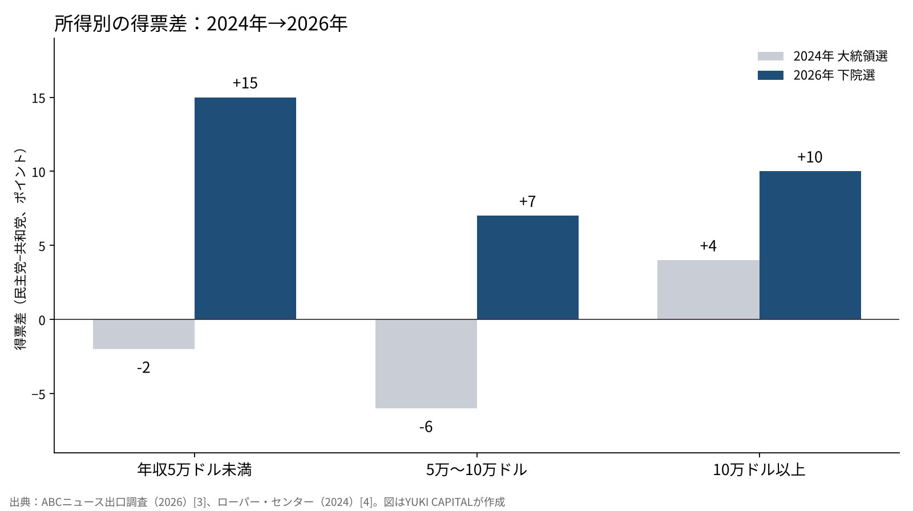
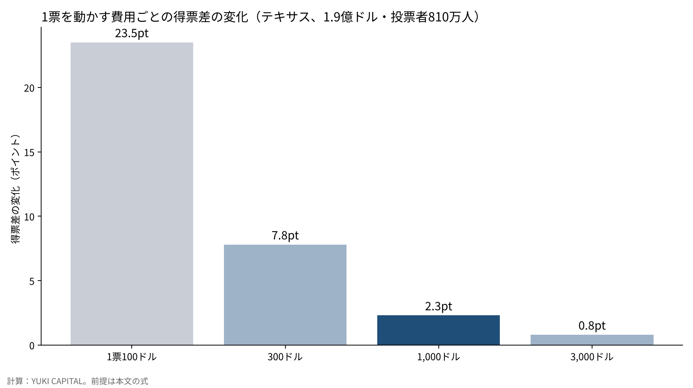

マスク氏の4.74億ドルは、票をどれだけ動かせたのか――献金・所得別の投票・過去の中間選挙から検証する
2026年11月3日の米中間選挙で、民主党は上院と下院の多数を取り返した[7]。この選挙で最も多くのお金を出した個人は、イーロン・マスク氏だったと報じられている。総額は約4億7,400万ドルで、テキサス州の上院選だけで約1億9,000万ドルに達したとみられる[6]。
連邦選挙委員会（FEC）への届け出では、共和党系の政治団体「上院リーダーシップ基金」への1億5,800万ドルの寄付が確認できる[1]。そのテキサスで、民主党のジェームズ・タラリコ氏が共和党のケン・パクストン氏を破った[11]。
本稿の問いは1つにする。マスク氏のお金は、票をどれだけ動かせたと推定できるのか。献金の額・所得別の投票・過去の中間選挙の3つの物差しで検証する。

問いと背景
最初に言葉を3つ定義する。スーパーPACは、候補者と調整しないことを条件に、個人や企業から上限なくお金を集めて広告などに使える政治団体である。中間選挙は、大統領選の2年後に行われる連邦議会の選挙を指す。得票差（マージン）は、2位の候補との得票率の差をポイントで表したものだ。
アメリカでは、2010年の最高裁判決以降、スーパーPACを通じた大口の献金が選挙の資金の大きな部分を占めるようになった。1人の資産家が数億ドルを出す選挙は、その典型になる。2026年のテキサス上院選は、10月半ばの時点で支出の総額が5億ドルを超え、州の上院選として過去最高になった[11]。マスク氏関連の約1億9,000万ドルは、そのおよそ4割にあたる。
問いを「票をどれだけ動かせたか」に置いたのは、勝ち負けだけを見ると、お金の効果と選挙全体の流れを切り分けられないからだ。負けた側に大きなお金があったことは、お金に効果がなかったことを意味しない。逆に、勝った側が使ったお金も、勝因の全部とは限らない。お金の効果は、選挙全体の流れを差し引いた残りとして推定するしかない。
データと方法
使う一次資料は6つである。上院リーダーシップ基金とアメリカPACのFEC届け出[1][2]、ABCニュースなどが加わる全国の出口調査（2026年、約7万8,000人）[3]、コーネル大学ローパー・センターがまとめた2024年の出口調査[4]、カリフォルニア大学サンタバーバラ校のアメリカ大統領プロジェクトによる中間選挙の議席の統計[5]、選挙運動の効果を測った2本の論文[8][9]だ。献金の総額と使い道は報道で補う[6]。
方法は3つに分ける。1つ目は、テキサス上院選で使われたマスク氏関連のお金を、州の投票者数で割り、1人あたりの金額を出す。投票者数は、前回の中間選挙である2022年のテキサスの実績、約810万人を目安にする[10]。
2つ目は、そのお金が何票を動かしたかを、「1票を動かすのに要る費用」の前提を置いて計算する。式は、動いた票の数＝投じた額÷1票あたりの費用、得票差の変化（ポイント）＝動いた票÷投票者数×100である。
3つ目は、所得別の投票を2024年の大統領選と2026年の下院選で並べ、どの層がどれだけ動いたかを見る。役職の違う選挙を比べるため、数字は流れの目安として扱う。
2026年の出口調査は、世帯の年収を6段階で尋ねている[3]。2024年の数字は、同じ年の出口調査を大学の研究機関が整理したもので、年収は3段階に分かれる[4]。そのため、比べるのは5万ドル未満・5万〜10万ドル・10万ドル以上の3つの区分に限る。得票差は、民主党の得票率から共和党側の得票率を引いた値で表す。
結果：お金の大きさと所得別の動き
| 項目 | 数字 | 出典 |
|---|---|---|
| マスク氏の選挙全体への支出（報道） | 約4億7,400万ドル | 報道[6] |
| 上院リーダーシップ基金への寄付（9月の2回） | 7,500万ドル＋8,300万ドル＝1億5,800万ドル | FEC[1] |
| テキサス上院選へのマスク氏関連の支出（推計） | 約1億9,000万ドル | 報道[6] |
| テキサス上院選の支出の総額（10月半ば） | 5億ドル超 | 報道[11] |
| テキサスの投票者1人あたり | 約23ドル（1億9,000万ドル÷810万人） | 計算 |
| 中間選挙で大統領の党が失った下院の議席（1934〜2018年の平均） | 28議席 | 大統領プロジェクト[5] |
| 同じく上院の議席 | 4議席 | 大統領プロジェクト[5] |
テキサスの投票者1人に約23ドルを使った計算になる。テレビや動画の広告は1人に何度も届くため、1人あたりの接触の回数で見れば、さらに大きな圧力がかかっていたはずだ。
選挙全体で見ると、4億7,400万ドルを2022年の下院選の投票者数、約1億700万人で割ると、1人あたり約4.4ドルになる[12]。お金は全国に薄く配られたのではなく、テキサスなど一部の州に集中していた。テキサス1州の1人あたりは、全国平均の5倍を超える。
所得別の投票は、次の図の形になった。2024年の大統領選では、年収5万ドル未満の層はトランプ氏が2ポイント上回り、5万〜10万ドルの層も6ポイント上回っていた[4]。2026年の下院選では、5万ドル未満の層で民主党が15ポイント上回り、5万〜10万ドルの層でも7ポイント上回った[3]。

動きの幅は、所得が低い層ほど大きい。5万ドル未満の層は17ポイント、5万〜10万ドルの層は13ポイント、10万ドル以上の層は6ポイント、民主党の側へ動いた計算になる。年収30万ドル以上の層では、民主党が21ポイント上回っている[3]。
年収5万ドル未満の層は、投票者の27%を占める[3]。この層の17ポイントの動きを全体の得票差に換算すると、約4.6ポイントになる。全国と1州を並べる粗い比較だが、後で見るお金の効果の推定（1票1,000ドルで2.3ポイント）の2倍近い大きさだ。
感度分析：1票の値段を動かす
1票を動かす費用を、100ドル・300ドル・1,000ドル・3,000ドルの4通りに置いて計算した。費用が安いほど、同じお金で多くの票が動く。
| 1票を動かす費用 | 動いた票（1億9,000万ドルの場合） | 得票差の変化 |
|---|---|---|
| 100ドル | 190万票 | 23.5ポイント |
| 300ドル | 63万票 | 7.8ポイント |
| 1,000ドル | 19万票 | 2.3ポイント |
| 3,000ドル | 6万3,000票 | 0.8ポイント |

1票100ドルなら、テキサスの得票差を20ポイント以上動かせたことになる。現実にそれほどの差は生まれていないため、この前提は高すぎると考えるのが自然だ。
選挙運動の効果を測った研究は、むしろ1,000ドル以上の側を支持する。49の実験をまとめた研究は、本選挙での戸別訪問や郵便による説得の効果を、平均でほぼゼロと推定した[8]。同じ候補が2回挑んだ選挙を比べた研究も、支出の効果は小さいと結論している[9]。ただし前者の研究は、選挙の早い時期や予備選挙では説得の効果が見られることも報告しており、効果がゼロだと言っているわけではない[8]。
1票1,000ドルなら、動いたのは約19万票、得票差で2.3ポイントになる。接戦の州では勝敗を分けうる幅だが、選挙全体の流れを逆にするほどの幅ではない。
考察
反対の見方は2つある。1つ目は、お金がなければ共和党はもっと大きく負けていたという見方だ。この見方に立てば、マスク氏のお金は負けの幅を縮めたことになり、効果がなかったわけではない。本稿の計算も、1票1,000ドルで2ポイント余りを押し戻した可能性を残している。
2つ目は、大口の献金そのものが逆効果だったという見方である。資産家が選挙に大金を出す姿が、有権者に「お金持ちのための政治」と映った可能性がある。所得の低い層ほど民主党の側へ大きく動いた事実は、この見方と矛盾しない。ただ、物価や景気への不満でも同じ形は説明できるため、献金が原因だとは言い切れない。
データの限界もはっきりしている。出口調査の2024年と2026年は、選挙の種類も調査の方法も異なる[3][4]。年収は本人の申告で、答えなかった人は数字に入っていない。テキサスの投票者数は2022年の実績で置いており、2026年の確定値ではない[10]。マスク氏の支出の総額と内訳は報道の推計で、FECの届け出で確かめられるのは一部にとどまる[1][2][6]。
過去の中間選挙と比べると、大統領の党が議席を失うこと自体は珍しくない。1934〜2018年の平均で、下院は28議席、上院は4議席を失ってきた[5]。今回の結果は、この平均の流れの中にあると見ることもできる。ただし上院では、民主党が共和党から7議席を奪う見通しと報じられており、平均の4議席を上回る[13]。お金が最も集まった上院で、平均より大きく負けたことになる。
答え合わせの基準は3つ置く。各州の確定した得票数が出たとき、テキサスの得票差が全国の流れより小さいか。FECの年末の届け出で、マスク氏の支出の総額と内訳がどこまで確かめられるか。2026年の出口調査の重み付けが確定したとき、所得別の動きが同じ形で残るか。
結論
マスク氏のテキサスでの支出は、投票者1人あたり約23ドルにのぼった。研究が示す「1票1,000ドル以上」の前提に立てば、動かせたのは得票差で2ポイント前後と推定できる。
所得別に見ると、2024年から2026年にかけて最も大きく民主党へ動いたのは、年収5万ドル未満の層だった。お金の大きさより、暮らしの手応えの変化のほうが、票の動きを大きく説明している可能性が高い。
大統領の党が中間選挙で負ける流れは、1934年以降の平均でも確かめられる。4.74億ドルは、その流れを止めるには足りなかったということになる。お金で動かせる幅には上限があり、その上限は接戦でしか意味を持たないのではないだろうか。
僕はこう見ている
僕はSpaceXを1,250株、テスラを400株持っている。マスク氏の献金は、テスラを海外に売っていくための政治の力でもあると僕は見ている。選挙で揺らいだのは、政治家を支える側としてのマスク氏で、2社の事業は揺らいでいない。
日本で会社を経営し、毎日総資産を公開していると、お金持ちへの反感を肌で感じることがある。アメリカでは、その反感が投票で表れたように見える。だから僕は、政治の勝ち負けで2社の株数を変えない。持つ理由は、事業が崩れたときにだけ見直す。
参考文献
- 連邦選挙委員会（FEC）「Senate Leadership Fund（C00571703）の届け出」2026-10-15 https://www.fec.gov/data/committee/C00571703/
- 連邦選挙委員会（FEC）「America PAC（C00879510）の届け出」2026-10-15 https://www.fec.gov/data/committee/C00879510/
- ABC News「Voter Polls for 2026 US House Election: Results & Analysis」2026-11-04 https://abcnews.com/Elections/polls-2026-us-house-election-results-analysis
- Roper Center for Public Opinion Research, Cornell University「How Groups Voted in 2024」 https://ropercenter.cornell.edu/how-groups-voted-2024
- The American Presidency Project, UC Santa Barbara「The 2022 Midterm Elections: What the Historical Data Suggest」 https://presidency.ucsb.edu/analyses/the-2022-midterm-elections-what-the-historical-data-suggest
- The Texas Tribune「Elon Musk is the donor behind Senate Republicans' massive rescue mission for Ken Paxton」2026-10-15 https://texastribune.org/2026/10/15/elon-musk-ken-paxton-donations-senate-gop-super-pac
- Yahoo Finance「Elon Musk's $474 million election bet」2026-11-04 https://finance.yahoo.com/markets/stocks/articles/elon-musks-474-million-election-195142581.html
- Joshua L. Kalla, David E. Broockman「The Minimal Persuasive Effects of Campaign Contact in General Elections: Evidence from 49 Field Experiments」American Political Science Review 112(1), 2018 https://doi.org/10.1017/S0003055417000363
- Steven D. Levitt「Using Repeat Challengers to Estimate the Effect of Campaign Spending on Election Outcomes in the U.S. House」Journal of Political Economy 102(4), 1994 https://doi.org/10.1086/261954
- Texas Secretary of State「Turnout and Voter Registration Figures (1970-current)」 https://www.sos.state.tx.us/elections/historical/70-92.shtml
- CBS News「James Talarico wins Texas 2026 Senate election, flipping seat for Democrats」2026-11-04 https://www.cbsnews.com/news/texas-2026-senate-james-talarico-ken-paxton/
- 連邦選挙委員会（FEC）「Federal Elections 2022: Election Results for the U.S. President, the U.S. Senate and the U.S. House of Representatives」2023 https://www.fec.gov/introduction-campaign-finance/election-results-and-voting-information/
- TheStreet「Stock Market Today: Dow, S&P 500, Nasdaq updates Nov. 4, 2026」2026-11-04 https://www.thestreet.com/stock-market-today/stock-market-today-dow-jones-sp-500-nasdaq-updates-nov-04-2026
図・トップ画像はYUKI CAPITALが作成
日々の数字と判断は、Xで記録している。